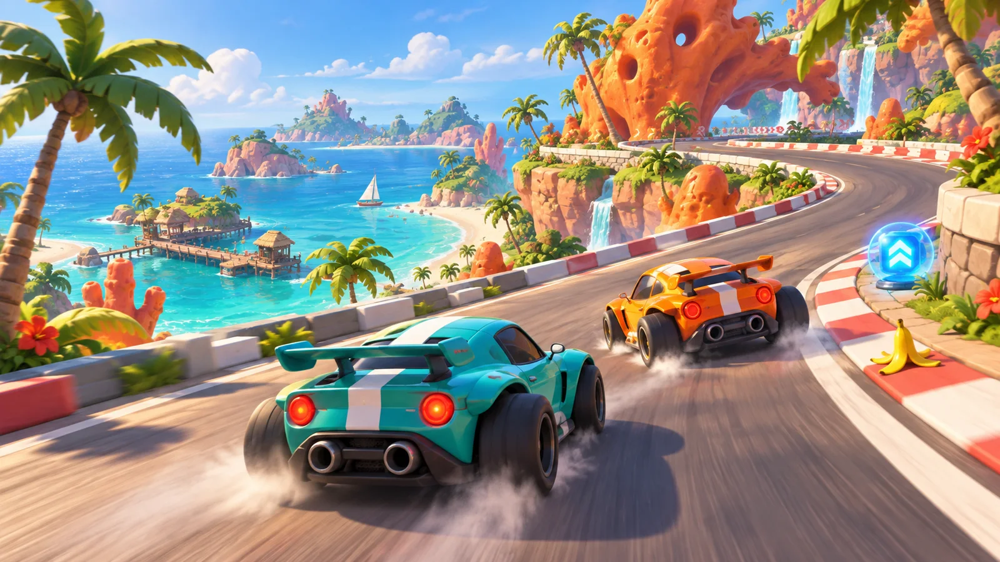

Tres vueltas a la meta
Un circuito completo, tres veces. Mantente en la pista: salir al césped reducirá la velocidad.
PROYECTO ARCADE EN DESARROLLO
Tres vueltas, objetos en la pista y mucho por explorar. Estamos creando un juego de carreras en el que cada escenario tendrá su propia personalidad.

LA IDEA DEL JUEGO
Sal desde la línea de salida, completa el circuito y cruza la meta después de tres vueltas. El reto está en controlar las curvas y aprovechar lo que encuentres por el camino.
Mecánicas previstas para el prototipoUn circuito completo, tres veces. Mantente en la pista: salir al césped reducirá la velocidad.
En el modo individual, el cronómetro marcará el reto: superar tu propia marca.
Con dos jugadores, ganará quien termine primero las tres vueltas. Una animación anunciará al ganador.
UN CIRCUITO, DIFERENTES UNIVERSOS
Estos son tres ambientes que imaginamos para el juego. Son propuestas visuales para explorar, no niveles terminados.
Un circuito costero entre palmeras, agua turquesa y curvas llenas de color.
Imágenes conceptuales creadas con IA para comunicar la dirección artística. Los modelos y escenarios del juego se construirán en Blender.
ALGO MÁS QUE ACELERAR
Pensamos en objetos fáciles de reconocer que hagan cada vuelta diferente. Estos efectos todavía son propuestas de diseño.
Podría hacer resbalar al coche y dificultar el control durante un momento.
Un obstáculo que reduciría la velocidad al chocar. Mejor encontrar otra trayectoria.
Un aumento temporal de velocidad para darle un poco más de emoción a la carrera.
CÓMO SE JUGARÁ
Acelera progresivamente, frena hasta detenerte y sigue pulsando para dar marcha atrás. La cámara seguirá al coche desde detrás para ver lo que viene.
Cámara prevista: gran angular, a unos 4 metros del coche y con un ángulo aproximado de 60°.
Contra tu marca personal. Controles previstos: WASD o las flechas.
DETRÁS DE LA LÍNEA DE SALIDA
Somos Ian, Eric y Wassim. Estamos dando forma a Race Circuit, desde esta web hasta los primeros prototipos de un coche y un circuito.
Web del proyecto
Equipo del proyecto
Equipo del proyecto
Creamos los modelos en Blender y queremos darles vida con Three.js. El siguiente paso será probar la conducción y construir la primera versión jugable.
LA PRÓXIMA PARADA
El juego sigue en desarrollo. Aquí estará el acceso a la futura versión jugable de Race Circuit.
Jugar ahoraVersión jugable próximamente · Página del juego pendiente